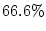
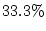
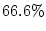
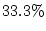

The major contribution of GT k is the abstraction of the training
process. Once the preparation phase is complete, training of the model
requires only that the user select a training validation method and
configure a few method-specific parameters. The training process is
automated, returning results and models which can later be used for
recognition in various systems. This abstraction allows users to avoid
the details of the underlying algorithms. GT
k is the abstraction of the training
process. Once the preparation phase is complete, training of the model
requires only that the user select a training validation method and
configure a few method-specific parameters. The training process is
automated, returning results and models which can later be used for
recognition in various systems. This abstraction allows users to avoid
the details of the underlying algorithms. GT k provides a few
default training/validation methods, however user-defined methods can
easily be integrated.
k provides a few
default training/validation methods, however user-defined methods can
easily be integrated.
Training/validation methods provide quantitative feedback concerning the training process. Such methods typically require that data collected for training be separated into two sets, a training set and a validation set. The training set is the set of data used to train the models, and the validation set is used to measure the performance of the trained models on unseen, yet known data. Evaluation of the model using the validation set helps gauge how well the model will generalize to new data. It also helps determine if overfitting occurs during the training process. Overfitting results in improved performance over the training data but a decline in generalization, and thus a decrease in performance over new data.
Two standard training/validation techniques provided by GT k are
cross-validation and leave-one-out validation.
Cross-validation randomly selects a predetermined percentage of the
data (typically ) as the training set. The remaining
data (typically ) acts as the validation set. Leave-one-out
validation selects one data example as the validation set and uses the
remainder of the data as the training set. The training/validation phase
is repeated for every permutation of the data set with one element
``left out'' of the training set. The results of each iteration are
then tallied to compute overall statistics of the models' performance.
k are
cross-validation and leave-one-out validation.
Cross-validation randomly selects a predetermined percentage of the
data (typically ) as the training set. The remaining
data (typically ) acts as the validation set. Leave-one-out
validation selects one data example as the validation set and uses the
remainder of the data as the training set. The training/validation phase
is repeated for every permutation of the data set with one element
``left out'' of the training set. The results of each iteration are
then tallied to compute overall statistics of the models' performance.